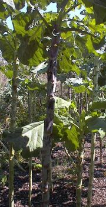

Temps pâssé nou viyait hardi d'chours dans les clios auve lus longs trous d'chour tchi 'taient un objet d'întéthêt pouor les vîsiteurs.
Ch'tait iun des souvenirs les pus populaithes pouor les cheins tchi v'enaient en Jèrri qué d'acater un bâton d'chour.
En Angliais, les chours 'taient mênommés “long jacks”.
Nou n'vait pus les chours en Jèrri coumme aut'fais - et les bâtons d'chours né sont dgéthe veus bein souvent nitout. Mais ch'est acouo pôssibl'ye d'en acater.
Les fielles 'taient données au bestchias pouor mangi - et bein seu, nou fouângnait du pain Jèrriais sus des fielles dé chour.
Nou dithait qu'les p'tits faîtchieux soulaient pendre lus malfaîteurs dé sus un trou d'chour la niet.
Et y'a deux-trais ditons et des chansons entouor nos chours.
Quand nou dit 'Nouos couochons n'veulent pus d'chours', chenna veurt dithe qu'nou-s'est surprîns par tchiquechose tch'est hors du c'mun.
Tchiquechose peut êt' vèrt coumme un chour, ou coumme eune fielle dé chour.
Si nou-s'envyie tchiquechose ès chours, chenna veurt dithe qu'nou l'flianque hors.

nou fait les pains et les met sus eune fielle dé chour sus la plianche
Viyiz étout: